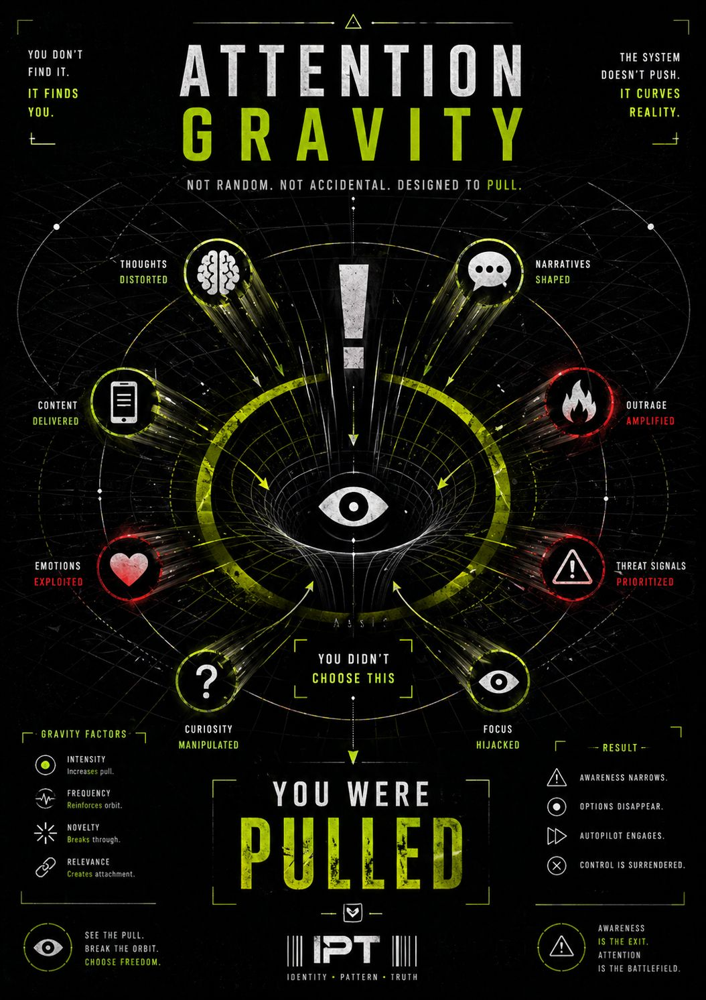

Force Layer
You don’t navigate information freely.
You move through curved space.
Before you choose…
before you evaluate…
before you even notice…
Attention is not neutral.
It bends toward:
And once something crosses a threshold…
You don’t just “see” it.
You feel:
Not everything competes equally.
Some signals are heavier.
They carry more:
And because of that…
Calm signals drift.
Charged signals capture.
Once your attention is captured…
everything else fades.
Options narrow.
Context collapses.
Speed increases.
And in that state:
You think: “I decided to engage this.”
But really:
Attention doesn’t move randomly.
It is shaped by forces you don’t see.
Most people believe they are exploring information.
They are not.
They are being:
The goal is NOT:
The goal is:
That exact second when:
Because once you feel it…
you can choose:
You think you chose it.